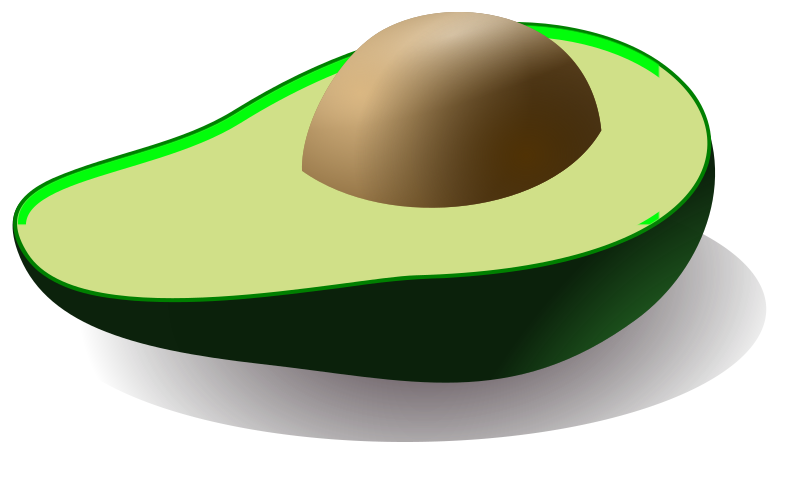
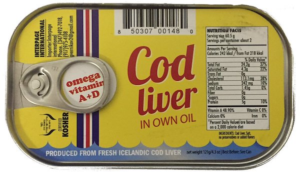
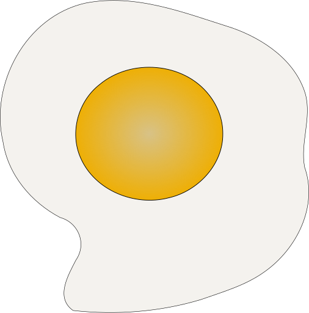
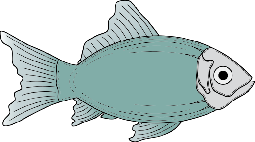
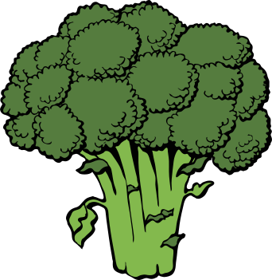
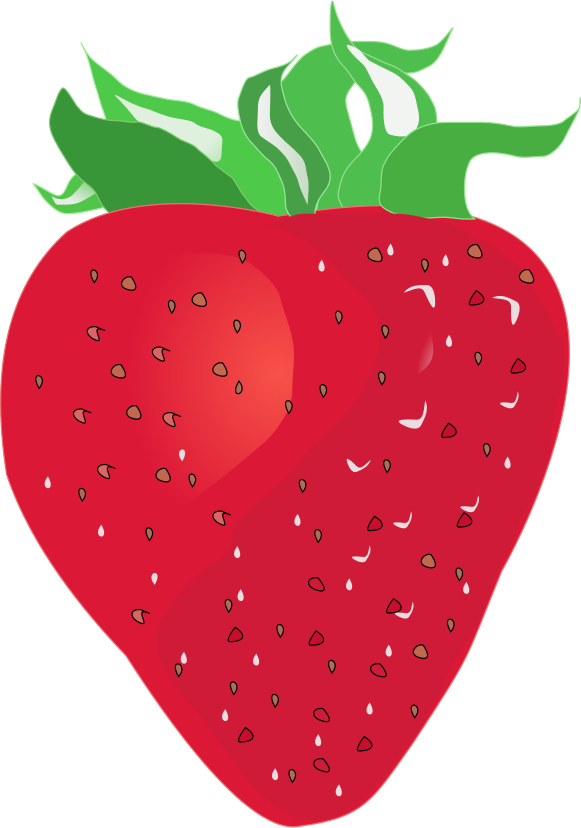

Let’s start with a ripe yellow banana. A very healthy food, right? Lots of potassium! But scroll down to find out which humdrum food has twice as much of the essential electrolyte bananas are famous for.
Serving size: 1 medium banana (7-8" long)
Potato
That's right, the humble potato! Potatoes are one of the richest food sources of potassium, which is important for muscle contraction and helps regulate fluid balance in the body. They also have a significant amount of vitamin C, folate, and magnesium.
Serving size: 1 medium potato (2.25-3.25" diameter)
Butter
(Just make sure to eat your potato with some butter or other fat. It helps slow down digestion of the starch and improve your body's absorption of the potato's nutrients. It also tastes good.)
Serving size: 1 tablespoon

Avocado
Speaking of potassium, avocados are another excellent source of the electrolyte, along with other nutrients, especially folate, which works with vitamin B12 in the production of red blood cells.
Serving size: 1 medium avocado
Beef liver
Let’s get some protein to go with all this potassium. How about some liver? No, seriously — it’s a wonder food: one
of the richest sources of vitamin A and vitamin B12, key nutrients for your bones, skin and brain.
Serving size: 1 slice (81 g)

Cod liver
Prefer seafood? Try cod liver instead (in a salad with boiled eggs and onion, for instance). It too has a significant
helping of vitamin A along with vitamin D, which promotes absorption of calcium in the gut.
Serving size: 1.7 oz (50 g)

Egg
The egg to go with your cod liver is also a truly wondrous food, high in vitamin B12, vitamin A, folate, and cholesterol (a misunderstood nutrient critical for brain function).
Serving size: 1 large (50 g)

Herring
If you want to stock up on beneficial omega-3 fatty acids as well as B12, try some herring. This fish, often neglected in the US, is full of nutrients, and delicious fishy flavor (an acquired taste, to be sure).
Serving size: 3 oz (85 g)
Tuna
Herring, for instance, is superior nutritionally in many ways to the more popular tuna.
Serving size: 3 oz (85 g)

Broccoli
Let's add some veggies to the mix. As your mother likely told you, eat your broccoli — it has a fantastic nutritional profile, high in folate, potassium, fiber, and, perhaps surprisingly, vitamin C.
Serving size: 1 cup (156 g)
Green peas
Peas have gone out of style but are another excellent food, high in many of the same nutrients as broccoli but also packing significant protein.
Serving size: 1 cup (160 g)
Bell pepper
Feeling a cold coming on? You could eat an orange for vitamin C — or a bell pepper. Just half a pepper has roughly the same amount of the nutrient as an orange.
Serving size: 1/2 medium pepper (59.5 g)
Oysters
Another food you may want to eat when sick is ... oysters! The bivalve is absolutely brimming with zinc, with 6 oysters containing a whopping 347% of your recommended daily allowance, along with significant B12 and vitamin D.
Serving size: 6 medium oysters (84 g)
Spinach
So far the foods we've seen haven't had as much magnesium as the body needs. For this, you can snack on some spinach, another extremely nutritious food. Just add some olive oil and garlic for flavor.
Serving size: 1/4 cup cooked (45 g)
Quinoa
Another excellent source of magnesium is whole grains. Take quinoa, which has 33% of the RDA in a single cup.
Serving size: 1 cup (185 g)
Dark chocolate
Okay, time for dessert. Let's start with some dark chocolate — another food with substantial magnesium, along with beneficial fats and antioxidants.
Serving size: 1 oz (28.35 g)

Strawberry
Strawberries make a delicious pairing with chocolate. Also, did you know a cup of strawberries has more than 100% of your RDA for vitamin C?
Serving size: 1 cup halves (152 g)
Navy beans
We end our nutrition journey with the lowly bean — a food with an undistinguished reputation. Yet beans are some of the most nutritionally dense foods for humans. Just make sure to eat them with some starch
or meat, as well as some fat, to get their full benefit.